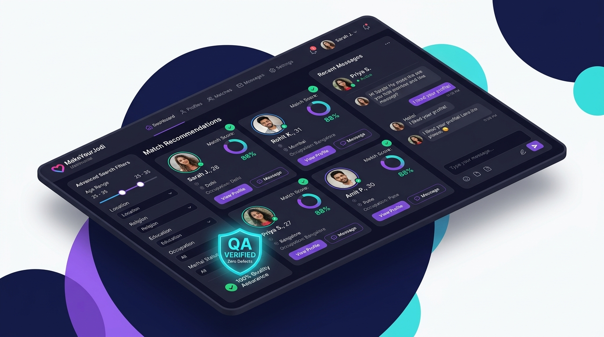
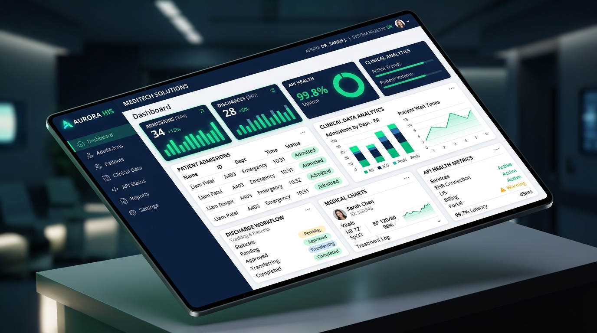

Quality Engineer with 2+ years specializing in testing complex web applications across Healthcare (HIS) and Matrimonial domains. Proven track record covering the complete STLC—from test planning and Postman API assertions through UAT stakeholder sign-off and zero-defect live production validation. Automation-capable with Selenium WebDriver, TestNG, and Jenkins CI/CD.
Planning to Live Prod Validation
Healthcare & Matrimonial
Experience how I structure, trigger, and validate test execution suites across web workflows, REST APIs, and Jenkins CI/CD automation pipelines in real time.
How I partner with Agile developers, Business Analysts, and Product Owners to catch defects early, eliminate downstream rework, and guarantee rock-solid releases.
Scrutinize user stories and technical specs in sprint planning to flag ambiguities, missing edge cases, and logic gaps before developers write code, saving crucial engineering cycles.
Design comprehensive test cases covering positive paths, boundary value analysis (BVA), equivalence partitioning, and negative flows. Prepare isolated test data configurations for high repeatability.
Execute rigorous Functional, Sanity, Smoke, Integration, and Exploratory test cycles. Surface hidden edge cases, session timeouts, and UX bottlenecks that automated scripts often miss.
Log highly detailed defect reports with precise steps-to-reproduce, payloads, logs, and severity ratings. Partner closely with developers on root-cause analysis (RCA) and re-test fixes thoroughly.
Coordinate User Acceptance Testing cycles, walking Product Managers, Business Analysts, and clinical/domain stakeholders through workflows to secure formal release sign-off without friction.
Perform immediate post-deployment sanity validations on live production servers, monitoring real-time user journeys and ensuring uninterrupted platform reliability after every build.
Real-world web platforms rigorously validated from inception through continuous live deployment.

High-scale web matchmaking platform connecting hundreds of thousands of users. Owned manual testing and QA validation across core modules including profile matching algorithms, real-time messaging, photo uploads, and premium subscription checkout.

Mission-critical enterprise healthcare web application serving clinical staff, nurses, and administrative heads. Validated core hospital modules — patient registration, inpatient admissions, bed discharge/transfer, EHR data flows, and complex billing reporting workflows.
Curated skillset spanning test automation, API validation, defect triage, CI/CD, and agile engineering practices.
Expert in Functional, Smoke, Sanity, Integration, System, and Exploratory testing across complex user journeys.
Web automation framework building using Java, Page Object Model (POM), dynamic explicit waits, and locator strategies.
Test suite structuring, priority execution, grouping, data-providers, parallel execution, and Maven dependency management.
Authoring comprehensive API test collections, JSON assertions, token authentication headers, and response payload validation.
Real-time sprint defect tracking, severity triage, root-cause tagging, user story grooming, and burndown chart tracking.
Enterprise test plan management, traceability matrix maintenance, and defect lifecycle control in regulated healthcare environments.
Automated build trigger execution, parameterized test builds, scheduled regression jobs, and ExtentReports artifact publishing.
Object-oriented programming (OOP), collections framework, exception handling, string manipulation, and clean test code design.
Facilitating business stakeholder sign-offs, deployment day smoke testing, and active post-release monitoring.
Branching strategies, pull request reviews, test repository maintenance, and collaborative code merging.
Over 2+ years of consistent execution delivering quality excellence across Agile engineering teams.
Rigorous computer science curriculum focusing on software engineering principles, object-oriented programming (Java), database systems (SQL), and software testing methodologies.
Effective communicator in multi-disciplinary Agile teams, adept at collaborating with international stakeholders, onshore/offshore developers, and product owners.
I am currently open to new roles as a Quality Engineer or SDET. Reach out directly or send a message below.